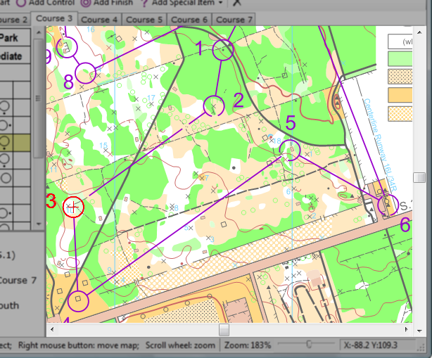

Map Display
The map display occupies most of the main window. It display the map and the currently selected course in purple. The size of the map display can be adjusted by dragging the border that separates it from the control description pane.

To select objects on the map display, click on them with the mouse.
The course displayed in the map display can be changed by using the course tabs.
To move the map display around the map, use the scroll bars, or hold and drag the right mouse button.
To zoom the map display in and out, use the scroll wheel on the mouse. See Moving Around the Map for more ways to move around the map.